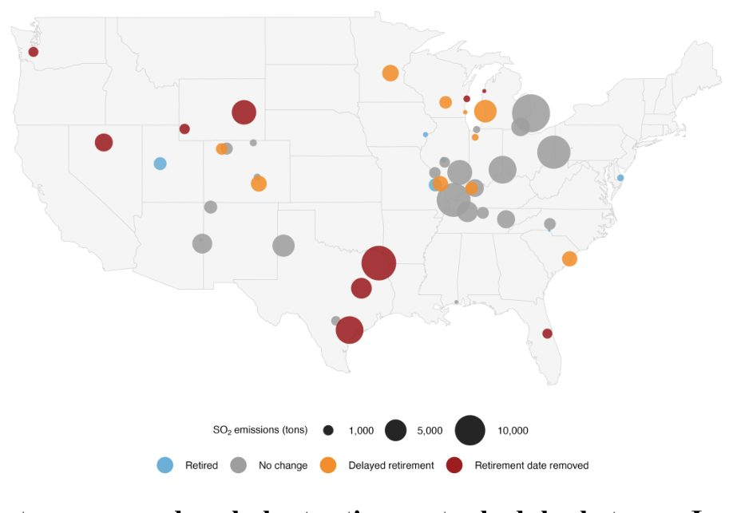
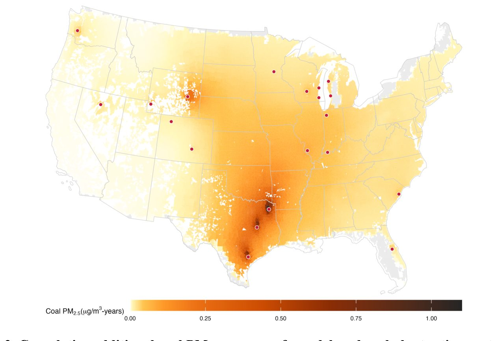

Бум искусственного интеллекта ценой здоровья: как отсрочка закрытия угольных ТЭС влияет на смертность


Полное описание рисунка
Рис. 1. Пересмотр графиков вывода из эксплуатации угольных электростанций в период с января 2024 года по январь 2026 года. Карта 50 угольных электростанций США с заявленными датами вывода из эксплуатации до 2035 года согласно инвентаризации EIA-860M за январь 2024 года. Цвета точек указывают на статус вывода из эксплуатации в инвентаризации EIA-860M за январь 2026 года: выведено из эксплуатации, без изменений, отсрочка вывода из эксплуатации или дата вывода из эксплуатации удалена. Размер точки пропорционален выбросам SO2 в 2024 году. 20 электростанций, классифицированных как имеющие отсрочку вывода или удаленную дату вывода, составляют пересмотренный набор электростанций, используемый в основном анализе воздействия на здоровье.
Развитие облачных вычислений и нейросетей требует колоссальных объемов энергии, из-за чего многие угольные электростанции в США откладывают закрытие. Исследователи проанализировали планы 20 таких объектов и выяснили, что продление их работы приведет к дополнительным выбросам мелкодисперсных частиц. Это неизбежно скажется на здоровье населения, увеличив показатели смертности в ближайшее десятилетие.
Главное
- 20 угольных ТЭС отложили закрытие из-за роста энергопотребления дата-центров.
- Прогнозируется 1256 дополнительных смертей из-за выбросов PM2.5 к 2035 году.
- Смертность от угольных частиц в 2,1 раза выше, чем от других источников PM2.5.
Подробнее
Исследование сфокусировано на 20 угольных электростанциях, которые в период с января 2024 по январь 2026 года перенесли или отменили даты своего вывода из эксплуатации. Авторы использовали данные инвентаризации EIA-860M (отчетность энергетических мощностей) и сопоставили их с моделями атмосферного переноса мелкодисперсных частиц (PM2.5). PM2.5 — это частицы диаметром менее 2,5 микрометров, которые при вдыхании проникают глубоко в легкие и кровоток, провоцируя сердечно-сосудистые и респираторные заболевания.
Для оценки последствий применялась методология анализа смертности среди бенефициаров программы Medicare (государственная система медицинского страхования в США). Моделирование показало, что продление работы этих объектов в 2026–2035 годах приведет к 1256 дополнительным смертям. В 18 из 20 случаев операторы станций прямо связывали необходимость продолжения работы с ростом нагрузки от гипермасштабируемых дата-центров, обеспечивающих работу ИИ-инфраструктуры.
Ограничения
Работа является препринтом без независимого рецензирования и опирается на прогностические модели, которые могут не учитывать будущие изменения в технологиях очистки выбросов.
Подробный разбор статьи
Резюме
Угольные электростанции в США продолжают оставаться значимым источником мелкодисперсных частиц (PM2.5), что напрямую связано с показателями смертности населения. Несмотря на утвержденные графики вывода мощностей из эксплуатации, растущий спрос на электроэнергию, подстегиваемый развитием облачных вычислений и технологий искусственного интеллекта, заставляет энергетические компании и регуляторов пересматривать эти планы.
Важно
Перенос сроков закрытия 20 угольных электростанций приведет к 1256 дополнительным смертям в период 2026–2035 годов.
По состоянию на январь 2024 года 50 угольных электростанций имели утвержденные планы по закрытию до 2035 года. Однако к январю 2026 года для 20 из них сроки были либо перенесены на более поздний период, либо вовсе исключены из графика. Авторы провели моделирование влияния выбросов PM2.5 от этих 20 объектов на смертность среди бенефициаров программы Medicare в период с 2026 по 2035 год. Согласно расчетам, пересмотр графика приведет к 1256 дополнительным летальным исходам (с доверительным интервалом от 1136 до 1376), что увеличивает прогнозируемую нагрузку на общественное здравоохранение в 3,1 раза по сравнению с первоначальным планом.
Пояснение
Medicare — государственная программа медицинского страхования в США, охватывающая преимущественно пожилых людей, чьи данные часто используются в эпидемиологических исследованиях для оценки влияния загрязнения воздуха на смертность.
Исследование показало, что 18 из 20 упомянутых электростанций функционируют в регионах, где наблюдается резкий рост спроса со стороны гипермасштабируемых центров обработки данных. В официальных документах энергетических компаний и федеральных предписаниях, обосновывающих продление работы станций, прямо упоминается необходимость обеспечения энергией растущих мощностей IT-сектора. Авторы подчеркивают, что графики вывода станций из эксплуатации корректируются значительно быстрее, чем проводится оценка рисков для здоровья населения, и подобные задержки влекут за собой измеримые человеческие потери.
Осторожно
Оценка смертности основана на прогностическом моделировании, которое предполагает сохранение текущих уровней выбросов и демографических показателей, что может не учитывать будущие технологические изменения в фильтрации выбросов.
Введение
Влияние угольной генерации на здоровье населения
Угольные электростанции остаются ключевым источником мелкодисперсных частиц (PM2.5) в США. Риск смертности от угольных PM2.5 в 2,1 раза выше, чем от PM2.5 из всех других источников вместе взятых. В период с 1999 по 2020 год это привело к примерно 460 000 смертей среди бенефициаров программы Medicare. Выбросы включают как первичные частицы, так и газообразные прекурсоры (диоксид серы, оксиды азота), способствующие формированию вторичных PM2.5, которые могут переноситься на большие расстояния.
Важно
Угольные PM2.5 несут в 2,1 раза более высокий риск смертности, чем другие источники, что привело к 460 000 смертей за 21 год.
Хотя количество угольных станций в США сокращается, по данным на январь 2026 года, в эксплуатации находилось 208 объектов. Рост спроса на электроэнергию, вызванный развитием центров обработки данных (ЦОД) для нужд ИИ и облачных вычислений, создает риски для графиков вывода станций из эксплуатации. В 2023 году ЦОД потребили значительный объем энергии, а к 2028 году этот показатель может достичь 325–580 ТВт·ч. Задержки в выводе станций из-за необходимости обеспечения надежности энергосистемы могут привести к сохранению выбросов и, как следствие, к дополнительным потерям жизней.
Методы оценки последствий задержек
Авторы сравнили планы вывода из эксплуатации 50 угольных электростанций, зафиксированные в отчетах EIA-860M за январь 2024 года и январь 2026 года. Выяснилось, что для 20 из них сроки были перенесены или отменены. Для этих объектов была рассчитана ежегодная экспозиция населения к угольным PM2.5 на уровне почтовых индексов (ZCTA) на период 2026–2035 годов. Оценка учитывала только вторичный компонент PM2.5, полученный из SO₂, что делает расчеты консервативными. Смертность оценивалась на основе данных Medicare.
Пояснение
ZCTA (ZIP Code Tabulation Area) — статистические зоны, используемые Бюро переписи населения США для агрегирования данных по почтовым индексам.
Осторожно
Исследование фокусируется на бенефициарах Medicare (преимущественно пожилые люди), поэтому общие показатели смертности могут отличаться от популяционных.
Результаты
Исторически воздействие мелкодисперсных частиц (PM2.5) от сжигания угля было сосредоточено в южных и восточных регионах США, включая долину Огайо, Аппалачи, Средний Запад и часть Юго-Востока (Рис. SN). Это распределение обусловлено как географией угольных электростанций, так и атмосферным переносом частиц на большие расстояния. Воздействие на население, взвешенное по численности, различалось в зависимости от демографических групп, при этом наиболее значительное отклонение от среднего показателя наблюдалось среди чернокожего населения (Рис. SN).
Пересмотр планов по выводу угольных мощностей
Графики вывода из эксплуатации угольных электростанций претерпели существенные изменения в период между отчетами EIA-860M за январь 2024 и январь 2026 года. Из 50 станций, планировавших закрытие до 2035 года согласно данным 2024 года, у 20 объектов (40%) сроки были либо перенесены на более поздний срок, либо вовсе исключены из планов (Рис. 1, Таблица SN). В 10 случаях даты были отложены, в 10 — аннулированы. Поскольку EIA-860M учитывает данные по генераторам, станция считалась затронутой, если хотя бы один её угольный генератор изменил статус; всего под это определение попали 34 из 44 генераторов. Доля выбросов SO₂, приходящаяся на эти объекты, варьировалась от 5% на станции Sherburne County (MN) до 100% на 12 других объектах (Таблица SN).
Полное описание рисунка
Рис. 1. Пересмотр графиков вывода из эксплуатации угольных электростанций в период с января 2024 года по январь 2026 года. Карта 50 угольных электростанций США с заявленными датами вывода из эксплуатации до 2035 года согласно инвентаризации EIA-860M за январь 2024 года. Цвета точек указывают на статус вывода из эксплуатации в инвентаризации EIA-860M за январь 2026 года: выведено из эксплуатации, без изменений, отсрочка вывода из эксплуатации или дата вывода из эксплуатации удалена. Размер точки пропорционален выбросам SO2 в 2024 году. 20 электростанций, классифицированных как имеющие отсрочку вывода или удаленную дату вывода, составляют пересмотренный набор электростанций, используемый в основном анализе воздействия на здоровье.
Важно
У 40% угольных электростанций, планировавших закрытие до 2035 года, сроки вывода из эксплуатации были отложены или отменены к 2026 году, что затронуло 34 генератора.
Оценка смертности на уровне отдельных электростанций
Анализ показал, что прогнозируемая смертность среди бенефициаров Medicare в 2026–2035 годах напрямую связана с изменениями в графиках закрытия конкретных станций (Рис. 4, Таблица SN). Лидерами по дополнительной смертности стали Welsh (TX) — 435 случаев, Coleto Creek (TX) — 316, Limestone (TX) — 279 и Dave Johnston (WY) — 99 случаев. На эти четыре объекта приходится 90% от общего числа дополнительных смертей. В общей сложности на три крупнейших источника (Welsh, Coleto Creek, Limestone) приходится около 1030 из 1256 дополнительных смертей (82%). Эти станции создали обширные зоны воздействия выбросов, охватывающие Техас и соседние регионы (Рис. 5).

Полное описание рисунка
Рис. 4. Уровень смертности на электростанциях, обусловленный отсрочкой вывода из эксплуатации, 2026–2035 гг. Совокупное число смертей от всех причин среди бенефициаров Medicare, обусловленных воздействием PM2.5 от угольных электростанций с отложенными датами вывода из эксплуатации, суммированное за 2026–2035 годы. Синие столбцы показывают смертность при исходном сценарии вывода из эксплуатации, а красные столбцы — смертность при пересмотренном сценарии.

Полное описание рисунка
Рис. 5. Дополнительное воздействие PM2.5 от угольных электростанций, обусловленное отсрочкой вывода из эксплуатации для электростанций Coleto Creek (Техас), Limestone (Техас) и Welsh (Техас), 2026–2035 гг. На картах показано совокупное дополнительное воздействие PM2.5 от угольных электростанций за 2026–2035 годы при пересмотренном сценарии вывода из эксплуатации по сравнению с исходным. Значения суммируются по годам прогноза на уровне ZCTA и приводятся в микрограммах на кубический метр-годы. На долю этих трех электростанций приходится 82% прогнозируемой дополнительной смертности.
Важно
Четыре электростанции с измененными графиками закрытия ответственны за 90% из 1256 дополнительных смертей среди бенефициаров Medicare в период 2026–2035 годов.
Пояснение
Анализ «на уровне станций» позволяет связать общие показатели смертности с выбросами конкретных объектов, учитывая их мощность, время работы и направление переноса загрязнений.
Спрос со стороны гипермасштабируемых дата-центров
Используя модель распределения спроса на электроэнергию (36), авторы сопоставили 20 станций с измененными планами закрытия с данными EPA eGRID2023 (37). Выяснилось, что 18 из 20 станций расположены в семи балансирующих зонах, где зафиксирован высокий спрос со стороны гипермасштабируемых дата-центров (HDC) (Таблица SN). Официальные документы подтверждают связь: министерство энергетики США издавало приказы о продлении работы станций Campbell (MI), Centralia (WA), Craig (CO), Culley (IN) и Schahfer (IN) для обеспечения надежности сети на фоне роста ИИ и дата-центров (38–44). Например, для Campbell (MI) прямо указывалась необходимость снабжения 1 ГВт мощности для строящегося дата-центра. Аналогичные требования по удержанию мощностей наблюдались в Висконсине, Миннесоте и Флориде, где операторы и регуляторы ссылались на рост нагрузки и развитие инфраструктуры для дата-центров (45–49).
Осторожно
Исследование основано на модельных оценках и административных данных; корреляция между спросом дата-центров и продлением работы станций не всегда означает прямую причинно-следственную связь в каждом отдельном случае.
Обсуждение
Обсуждение результатов и последствия для здоровья
Данное исследование демонстрирует, что пересмотр графиков вывода из эксплуатации угольных электростанций ведет к дополнительному воздействию мелкодисперсных частиц (PM2.5) и значительному росту смертности. Анализ данных EIA-860M за период с января 2024 по январь 2026 года показал, что 40% угольных станций, планировавших закрытие до 2035 года, отложили этот срок или вовсе исключили его из планов. Согласно пересмотренному сценарию, совокупная смертность среди бенефициаров Medicare, связанная с выбросами PM2.5 от этих станций, оценивается в 1256 дополнительных смертей за 2026–2035 годы, что в 3,11 раза превышает показатели первоначального сценария.
Важно
Задержка вывода из эксплуатации угольных станций приведет к 1256 дополнительным смертям среди пожилых людей в период 2026–2035 гг., что в 3,11 раза выше ожидаемого уровня при своевременном закрытии.
Особую тревогу вызывает тот факт, что 18 из 20 станций с измененными графиками находятся в регионах с высоким спросом на электроэнергию со стороны гипермасштабируемых центров обработки данных (ЦОД). Поскольку строительство новых мощностей и линий электропередачи занимает больше времени, чем рост нагрузки от ЦОД, стареющие угольные блоки становятся «ресурсом по умолчанию». Это перекладывает бремя смертности на сообщества, проживающие с подветренной стороны, которые не получают экономических выгод от работы дата-центров.
Пояснение
Medicare — государственная программа медицинского страхования в США, охватывающая преимущественно лиц старше 65 лет; бенефициары Medicare являются основной группой риска при анализе смертности от загрязнения воздуха.
Ограничения исследования и методологические аспекты
Наше исследование опирается на историческую связь между выбросами SO₂ на уровне конкретных станций и воздействием PM2.5 для прогнозирования будущих рисков. Основной вклад в смертность вносят несколько объектов, таких как Welsh, Coleto Creek, Limestone (Техас) и Dave Johnston (Вайоминг). Важно отметить, что это сценарный анализ, а не прогноз реальной диспетчеризации. Мы использовали средние годовые выбросы SO₂ за 2023–2025 годы, не моделируя изменения в эффективности очистки или составе угля.
Осторожно
Оценка смертности ограничена только бенефициарами Medicare и не учитывает другие возрастные группы, нефатальные заболевания (астма, сердечно-сосудистые патологии) или влияние метеорологических изменений.
Модель является консервативной: для 10% бенефициаров (и до 23% для станции Stanton) воздействие не оценивалось из-за отсутствия данных. Кроме того, мы не моделировали замещающие мощности (например, газовую генерацию), поэтому наши результаты отражают «валовый» эффект сохранения угольных станций, а не чистый эффект с учетом альтернативных источников энергии. Несмотря на реальные проблемы с надежностью энергосистем, сохранение угольной генерации не является нейтральной стратегией для общественного здравоохранения и требует учета медицинских последствий при принятии решений.
Методы
Дизайн исследования и сценарии вывода из эксплуатации
Графики вывода угольных электростанций из эксплуатации были сформированы на основе данных Управления энергетической информации США (EIA-860M). В качестве исходного графика использовались данные инвентаризации за январь 2024 года, а для пересмотренного сценария — за январь 2026 года. В анализ включили электростанции, имевшие как минимум один действующий угольный энергоблок с запланированной датой закрытия в отчете за январь 2024 года. Единицей анализа стал отдельный генератор, что позволило избежать искажений при агрегировании данных на уровне всей станции. Из 50 подходящих электростанций критериям затронутых объектов соответствовали 20. В их составе из 44 угольных генераторов 19 имели отложенные сроки закрытия, 15 — удаленные даты, 7 остались без изменений, 2 были выведены из эксплуатации, а 1 переведен на природный газ (Таблица S1).
Для учета частичного вывода из эксплуатации в конкретном году рассчитывался коэффициент календарной доступности: 1 для полных лет до закрытия, 0 после и дробное значение (число месяцев до закрытия, деленное на 12) для года вывода. В пересмотренном сценарии для генераторов с удаленными датами коэффициент 1 сохранялся до 2035 года. Итоговые коэффициенты на уровне станции рассчитывались как средневзвешенные по средним выбросам SO₂ за 2023–2025 годы, что точнее отражает вклад каждого генератора, чем расчет по мощности.
Пояснение
Коэффициент календарной доступности — это математический метод пропорционального распределения годовых выбросов, позволяющий корректно учесть, что станция работала лишь часть года до своего закрытия.
Выбросы SO₂
Данные о годовых выбросах SO₂ за 1999–2025 годы были получены из базы данных EPA Clean Air Markets. Для прогнозов на 2026–2035 годы базовый уровень выбросов каждого генератора определялся как среднее арифметическое за 2023–2025 годы. Этот показатель фиксировался до даты закрытия согласно выбранному сценарию и умножался на коэффициент календарной доступности. После даты закрытия, указанной в соответствующих отчетах EIA (январь 2024 для исходного сценария и январь 2026 для пересмотренного), выбросы принимались равными нулю.
Моделирование воздействия PM2.5 от угольных электростанций
Для оценки воздействия мелкодисперсных частиц (PM2.5), связанных с сжиганием угля, использовались данные о долгосрочном влиянии источников выбросов за 1999–2020 годы. Концентрации PM2.5, ассоциированные с выбросами диоксида серы (SO2) от американских угольных электростанций, рассчитывались с помощью модели HyADS (HYSPLIT с усредненной дисперсией). Эти данные были агрегированы по почтовым индексам (ZCTA) и соотнесены с ежегодными объемами выбросов SO2 на уровне каждой станции. В данной работе под «угольными PM2.5» понимается исключительно фракция, связанная с SO2, без учета первичных PM2.5 или частиц, образованных другими прекурсорами.
Пояснение
Модель HyADS — это упрощенная атмосферная модель, которая позволяет связать конкретный источник выбросов с уровнем загрязнения в определенной точке, рассчитывая траектории переноса частиц в зависимости от метеоусловий.
Поскольку данные HyADS отсутствовали для периода 2026–2035 годов, была построена эмпирическая лог-лог модель: \log( extcoalPM2.5,pzt) = αpz + γ \log( extSO2,pt) + \epsilonpzt. Здесь αpz — фиксированный эффект для пары «станция-ZCTA», γ — эластичность (процентное изменение PM2.5 при 1% изменении SO2), а ε — остаточная ошибка. Модель была обучена методом наименьших квадратов с кластеризацией стандартных ошибок по станциям. Показатели качества модели составили: скорректированный R² = 0,945, внутригрупповой R² = 0,834. Оценка эластичности γ составила 1,165 (95% ДИ: 1,124–1,206, Таблица S4), что указывает на нелинейную зависимость: при росте выбросов SO2 концентрация PM2.5 растет чуть быстрее пропорции.
Для прогнозирования концентраций в 2026–2035 годах использовались сценарии выбросов SO2. Чтобы перейти от логарифмической шкалы к реальным значениям, применялся «размазывающий» множитель Дуана (Duan smearing factor), который корректирует смещение при экспонировании. Коэффициент рассчитывался индивидуально для каждой станции (диапазон 1,063–1,226, среднее 1,169, Таблица S4). В итоговую выборку вошли 12 474 346 наблюдений для 616 801 пары «станция-ZCTA». Дополнительное воздействие PM2.5 рассчитывалось как разница между сценариями с отложенным закрытием станций и базовым сценарием. Смертность распределялась пропорционально вкладу каждой станции в общую концентрацию PM2.5 в конкретном ZCTA.
Анализ воздействия на подгруппы
Мы провели расчет воздействия PM2.5 от угольных электростанций, взвешенного по численности населения, с разбивкой по полу, расе и возрасту. Демографические данные на уровне почтовых индексов (ZCTA) были взяты из отчетов Бюро переписи населения США за 2020 год. Эти данные использовались исключительно для весовых коэффициентов при анализе подгрупп и не включались в расчеты смертности, где применялись показатели регистрации в системе Medicare. Для исторического анализа (1999–2020 гг.) мы вычислили среднегодовые концентрации PM2.5 и определили среднее воздействие для каждой подгруппы, выразив его в процентах относительно общего среднего показателя по населению. В рамках прогнозного сценария выхода электростанций из эксплуатации на 2026–2035 годы мы рассчитали кумулятивное воздействие PM2.5, взвешенное по численности подгрупп в каждом ZCTA. Процентное увеличение воздействия при пересмотренном сценарии определялось как разница между кумулятивным воздействием в пересмотренном и исходном сценариях, деленная на показатель исходного сценария.
Популяция Medicare и базовые показатели смертности
Базовые данные о регистрации в Medicare на уровне ZCTA были получены из отчетов Центров услуг Medicare и Medicaid (CMS), а прогнозы на 2026–2035 годы — из отчета Попечителей Medicare (Таблица SN5). Проектируемая численность населения Medicare по ZCTA рассчитывалась путем распределения национальных прогнозов пропорционально доле каждого ZCTA в данных 2019 года. При этом географическое распределение оставалось фиксированным, несмотря на рост общей численности бенефициаров с 69,5 млн в 2025 году до 81,3 млн в 2035 году (рост ~17%). Базовые показатели смертности от всех причин были рассчитаны на основе данных 2019 года (Таблица SN6). Мы намеренно использовали 2019 год вместо 2020-го, так как пандемия COVID-19 привела к аномальному росту смертности в 2020 году (0,04377 против 0,03801 в 2019 году и 0,03785 в 2023 году).
Статистический анализ
Оценки смертности рассчитывались на уровне «электростанция – ZCTA – год» с последующей агрегацией. Количество смертей, связанных с PM2.5 от угольных станций, определялось по формуле: Bi,j,t = Cj,t imes Ej,t imes (1 - \exp(-β imes coalPMi,j,t)), где Bi,j,t — число смертей, Cj,t — базовая смертность, Ej,t — число участников Medicare, а coalPMi,j,t — прогнозная концентрация PM2.5. Коэффициент β (логарифмически-линейный коэффициент отклика смертности) соответствует относительному риску 1,0125 (ДИ: 1,0113–1,0137) на 1 µ g/m³. Кумулятивные смерти за 2026–2035 годы суммировались по всем станциям, ZCTA и годам. Дополнительная смертность при изменении сроков вывода станций рассчитывалась как разница между сценариями. Нижние и верхние границы оценок смертности определялись на основе доверительных интервалов коэффициента β.
Пояснение
Коэффициент отклика смертности (mortality-response coefficient) — это статистическая мера, показывающая, насколько увеличивается риск смерти при повышении концентрации загрязнителя на единицу измерения.
Анализ чувствительности к будущим выбросам SO2 и датам вывода из эксплуатации
Основная модель опиралась на допущения о годовых выбросах SO2 для действующих станций и сроках их работы после отмены заявленных дат закрытия. В качестве базового уровня выбросов за активный год использовались средние показатели каждого генератора за 2023–2025 годы, как наиболее актуальные данные. Поскольку реальные выбросы могут варьироваться из-за интенсивности работы или спроса на электроэнергию, а отмена даты закрытия не определяет точный срок службы, были проведены три теста на чувствительность. Они учитывали пропорциональные изменения выбросов, индивидуальные колебания производительности конкретных генераторов и сокращенные сроки эксплуатации. Все тесты сохраняли фиксированные эффекты для пар «станция-ZCTA», эластичность SO₂-уголь PM2.5, прогнозы численности населения Medicare, базовые показатели смертности и коэффициенты отклика смертности на PM2.5.
Пояснение
Анализ чувствительности — это метод проверки устойчивости выводов модели при изменении исходных параметров, позволяющий понять, насколько сильно неопределенность данных влияет на итоговый результат.
Сценарии равномерного масштабирования выбросов
Для оценки влияния отклонений в объемах выбросов мы повторили расчеты, используя 50%, 75%, 125% и 150% от среднегодового уровня выбросов SO2 каждого генератора за 2023–2025 годы. Это позволило оценить, как меняется расчетное бремя при пропорциональных изменениях базового уровня.
Сценарии выбросов для конкретных генераторов
Поскольку равномерное масштабирование не учитывает специфику отдельных объектов, мы провели анализ, используя минимальные и максимальные годовые значения выбросов SO2, зафиксированные для каждого генератора в период 2023–2025 годов (суммировано до уровня станции). Эти данные отражают реальный диапазон работы конкретных мощностей.
Альтернативные допущения о датах вывода из эксплуатации
В основном анализе предполагалось, что станции с отмененными датами закрытия продолжат работу до конца периода 2026–2035 годов. Чтобы проверить влияние этого допущения, мы протестировали сценарии, где закрытие происходит через 2 года или 5 лет после первоначально заявленной даты. Для станций с уже известными пересмотренными датами или сохранившими исходные сроки параметры остались прежними. При расчетах учитывалась доля доступности станции в календарном году, включая частичную работу в год закрытия.


Полное описание рисунка
Рис. 2. Совокупное дополнительное воздействие PM2.5 от угольных электростанций вследствие отсрочки их вывода из эксплуатации по сравнению с исходным сценарием, 2026–2035 гг. Совокупное дополнительное воздействие PM2.5 от угольных электростанций на уровне ZCTA (почтовых индексов) при пересмотренном сценарии вывода из эксплуатации по сравнению с исходным сценарием. Цвета показывают совокупную разницу в воздействии PM2.5 от угольных электростанций между пересмотренным и исходным сценариями за 2026–2035 годы. Точки обозначают угольные электростанции с отложенными датами вывода из эксплуатации. Значения приведены в микрограммах на кубический метр-годы. Серые области указывают на ZCTA без оценочного исторического фиксированного эффекта электростанция-ZCTA для затронутых объектов; белые области находятся вне зоны покрытия ZCTA по данным переписи населения.

Полное описание рисунка
Рис. 3. Совокупное число смертей от всех причин среди бенефициаров Medicare, обусловленных воздействием PM2.5 от 20 угольных электростанций с отложенными датами вывода из эксплуатации. Синяя и красная линии показывают совокупную смертность, обусловленную воздействием, при исходном и пересмотренном сценариях вывода из эксплуатации соответственно. Заштрихованные полосы показывают оценки, основанные на нижних и верхних границах оценок реакции смертности на воздействие PM2.5. Зеленые столбцы показывают совокупное число дополнительных смертей при пересмотренном сценарии по сравнению с исходным; полосы погрешностей показывают соответствующие нижние и верхние оценки, отражающие неопределенность функции «концентрация-реакция» для PM2.5 от угольных электростанций.
Схема исследования
Препринт не прошёл рецензирование. Выводы предварительные.
Источник
| Источник | Категория | Лицензия препринта |
|---|---|---|
| medRxiv | epidemiology | CC BY-NC-ND 4.0 |
Источники
| Источник | Ссылка |
|---|---|
| Страница препринта | medrxiv.org |
| Полный текст (PDF) | medrxiv.org |
| Копия PDF | github.com |
| DOI | doi.org |
| Метаданные Crossref | api.crossref.org |
| Europe PMC | europepmc.org |
Данные, код и приложения
| Что | Описание | Ссылка |
|---|---|---|
| Приложение | (supplements/364336_file02.pdf) | media-1.pdf |